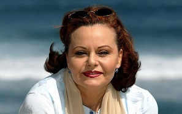
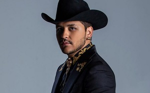

Rocio Durcal
María de los Ángeles de las Heras Ortiz3 (Madrid, 4 de octubre de 1944-Torrelodones, 25 de marzo de 2006), conocida por su nombre artístico Rocío Dúrcal, fue una actriz y cantante española. Dúrcal es considerada como la «reina de las rancheras»4. Nació en Madrid, España, el 4 de octubre de 1944 en el barrio de Cuatro Caminos. Ahí pasaría los primeros años de su vida. Sus padres fueron Tomás de las Heras y María Ortiz. Ellos afirmaron que su hija fue una niña muy tranquila,
Cristian Nodal
Christian Jesús González Nodal (Caborca, Sonora; 11 de enero de 1999), mejor conocido como Christian Nodal, es un cantante y compositor mexicano. Su primer sencillo, «Adiós amor», publicado en 2016 bajo el sello discográfico Fonovisa. Christian Nodal participó en su infancia y adolescencia en varios concursos de juegos infantiles , obteniendo los primeros lugares. A los 16 años, mientras estudiaba en el sistema educativo Escuela Nacional Preparatoria No.8
Darío Gómez
Darío de Jesús Gómez Zapata (San Jerónimo, Antioquia, 6 de febrero de 1951) es un cantante y compositor de música popular colombiana, conocido con el apodo artístico de El Rey del Despecho. Su iniciación en la interpretación ocurrió con un grupo llamado Los Legendarios, hasta lograr conformar su propio sello disquero. Su carrera artística le ha brindado más de seis millones de discos vendidos en los mercados nacionales e internacionales.